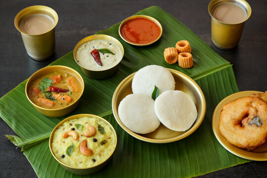
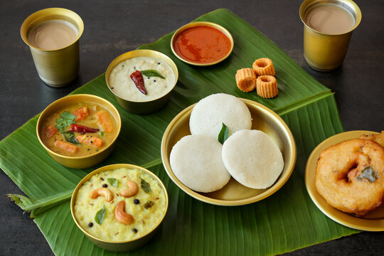

Home
"We went here to celebrate my husbands bday and we had a great time.
We started with mutton soup which was our favourite, followed by starters which were delicious, followed by biryani and non veg curries. Master Chef Taj and his team were super courteous and pleasant. Definitely try their Bidri Dal.

 

All Time Favourite
French Fries 106
Chilli Cheese Toast 115
Chilli Cheese Gralic Toast 115
Garlic Bread 98
Garlic Bread with Cheese 119
Plain Sandwich 175
Grilled Sandwich 175
Club Sandwich 175
Unnamed Road, Engineers Colony, Sri Krishna Nagar, Pragathi Nagar, Yousufguda, Hyderabad, Telangana 500045
Hours:
Open ⋅ Closes 11 pm
Prophet's Birthday might affect these hours
Phone: 040 2373 6946
Order: swiggy.com
Zomoto.com
zepto.com
Reviews
Really amazing food and very pleasant staff. Was a great experience, on my birthday. Got a complementary cake from the head chef!
We are indeed pleased to learn that you enjoyed your special day and had a fantastic evening at Bidri. Our team will be delighted to receive your compliments. Thank you for dining with us, we hope to welcome you back again very soon.
asically I am not into reviews but the culinary delight we had on 25 July 2021 tempted me to write this review. I as All accor club member have been to many five star hotels but what we had on that day at Bidri by Marriot was almost like out of the world experience. That day being my daughter’s birthday and keeping in view of the pandemic situation we explored outstanding eateries of Hyderabad and zeroed in on bidri where we opted for set menu which is around 1800+ taxes (non-veg) for each person. However I can say that it is value for money for the way we have been treated and for what we have been served. Each and every dish was quite good and felt like all the items were prepared with love and respect for the people who go there for dining. I will be ungrateful if I didn’t mention the name of the Chef Taj who I think behind our gastronomic experience at Bidri. What a chef he is and what a love for the food he prepared. He takes personal interest in every one and serves every one at least one dish as per their choice. He took special interest serving lucknowi mutton dum biryani to us which I can say mind boggling. When he came to know that it was my daughter’s birthday he spontaneously reacted and placed before her a yummy chocolate cake with all paraphernalia flowers etc encased in beautiful pot like thing which made our day. I am nothing more to say except Wah Bidri and Wah Taj ( chef).